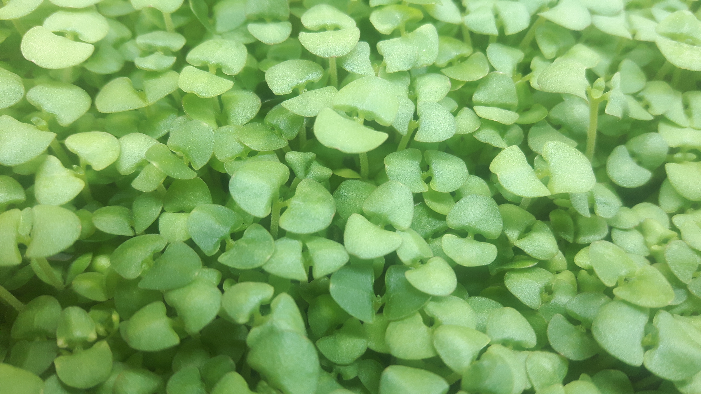
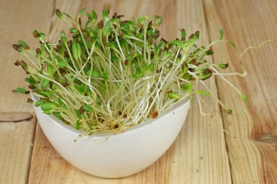
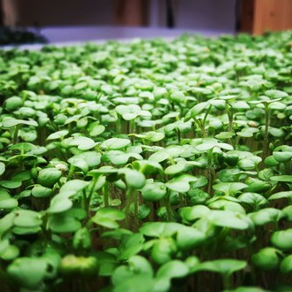
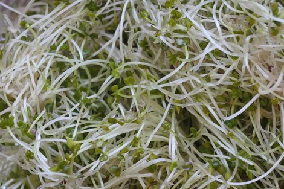
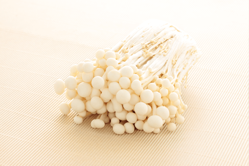

Unsere Jungpflanzen
frisch und knackig oder vakuumgetrocknet und knusprig
![ Basilikum Basilikum-Die Jungpflanze schmeckt noch kräftiger als Basilikumblätter. Das Mini-Blattgemüse hat einen intensiv aromatischen, pfeffrigen Geschmack und kann überall dort eingesetzt werden, wo man Basilikumblätter verwendet (mediterrane Küche, Salate, Suppen, zur Dekoration). Schmeckt besonders in Verbindung mit Tomaten. Basilikum hat einen hohen Energiegehalt, enthält viele ätherische Öle, ist reich an Enzymen sowie Vitaminen und enthält viele Mineralstoffe. Basilikum hat einen hohen Energiegehalt, enthält viele ätherische Öle, ist reich an Enzymen sowie Vitaminen und enthält viele Mineralstoffe.](images/BASILIKUM.jpg){kind=link}
![ Alfalfa Alfalfa bedeutet wörtlich übersetzt „gutes Futter“ . Ihr mild nussiger Geschmack ist frisch und delikat, so dass sie in vielfältiger Form zubereitet werden kann (z.B. Salate, Suppen, Eierspeisen, Gemüsebeilagen, Gemüsesäfte, Brotbelag etc.). Weil Alfalfa-Micros sofort nach dem Marinieren zusammenfallen, sollten sie immer oben auf andere Salate gestreut und erst am Tisch angemacht werden. Alfalfa ist kalorienarm und sehr vitaminreich und eignet sich auch bestens als erste grüne Nahrung für Kleinkinder. Gekeimt ist Alfalfa ein Vitalstoffwunder. Nur Getreidegrün liefert mehr Eiweiß und Chlorophyll! Außerdem enthalten Alfalfajungpflanzen alle 8 essenziellen Aminosäuren, reichlich Mineralstoffe und Vitamine - insbesondere Vitamin C. Alfalfa ist kalorienarm und sehr vitaminreich.](images/ALFALFA.jpg){kind=link}
{kind=link}
![ Gelbsenf Der Geschmack ist würzig-scharf und erinnert an Meerrettich. Der schwarze Senf ist schärfer als der weiße Senf und wird häufiger als Heilmittel verwendet. Schmeckt toll in Salaten, Suppen, Kräuterquarks, scharfe Gemüse-, Fleisch- und Fischgerichte und auch prima auf Wurst- und Käsebroten. Schwere Speisen werden durch die Beigabe von Senf-Jungpflanzen leichter verdaulich. Durch Erwärmen lässt die Schärfe nach. Vitalstoffe. Die frischen Senf-Greenies sind reich Vitaminen A, B, C, E und K und den Mineralien Calcium, Eisen, Kalium, Magnesium und Zink. Sie enthalten außerdem 30 – 35 % Protein und vor allem das gesunde ätherische Senföl.](images/GELBSENF.jpg){kind=link}
{kind=link}
{kind=link}
{kind=link}
![ Brokkoli Brokkoli-Jungpflanzen haben eine frische, sehr leichte Schärfe. Brokkoli-Jungpflanzen haben im Vergleich zu Brokkoligemüse 50 x mehr Senföl und Schwefelverbindungen (die so genannten Glucosinolate). Sie enthalten reichlich Mineralstoffe (Chrom, Eisen, Fluorid, Jod, Kalium, Kalzium, Kupfer, Mangan, Magnesium Natrium, Phosphor und Zink), die Vitamine B1, B2, B3, B6, C, E, K und Provitamin A sowie die wertvollen sekundären Pflanzenstoffe: Flavonoide, Isoflavonoide, Glucosinolate, Polyphenole, Senföle und Carotin.](images/BROKKOLI.jpg){kind=link}
Jungpflanzen sind, essbare Keimpflanzen, die zur Zeit vor allem in der gehobenen Gastronomie sowohl zur optischen als auch zur geschmacklichen Bereicherung von Gerichten eingesetzt werden. Köche benutzen Jungpflanzen, um die Attraktivität und den Geschmack ihrer Menüs zu erhöhen. Kleiner als Jungpflanzen, aber später geernet als Sprossen, weisen die verschiedenen Jungpflanzen eine Vielzahl an Geschmacksrichtungen auf, wie beispielsweise scharf oder süß. Desweiteren werden sie aufgrund ihrer vielfältigen Farbtöne und Texturen geschätzt. Jungpflanzen lassen sich hervorragend für das Garnieren von Salaten, Suppen, Sandwiches, Smoothies und anderen Gerichten verwenden. Das ‘junge Grün’ kann aus den Samen verschiedenster Arten von Gemüse, Kräutern und anderen Pflanzen gezogen werden. Die Ernte-Größe beläuft sich auf ca. 2,5 bis 7,5 cm mit Stängel und Blättern. Ein Jungpflanzen hat einen einzigen Stängel, der bei der Ernte knapp über der Erde abgeschnitten wird. Dabei kann es neben den voll entwickelten Keimblättern in der Regel auch schon die ersten richtigen Blätter aufweisen er Vorteil der Jungpflanzen gegenüber Sprossen liegt - ausser der Fähigkeit die wertvollen Nährstoffe des Bodens aufzunehmen - darin, dass sie durch das Sonnenlicht Chlorophyll bilden. Dabei werden die Inhaltsstoffe des Samens aufgewertet und hochwertiges Eiweiß gebildet. Mit der Grünung wird die Kraft, Energie und die sonnenlichtwertigen Potentiale erhöht. Das kann bei Pflanzen mit nachgesagter Heilwirkung die Heilkraft erhöhen. Bei Pflanzen wie Rettich, Senf etc. werden während des Wachstums die ätherischen Öle und Bitterstoffe gebildet und erhöhen damit ihre pharmakologische Wirkung.
{kind=link}
{kind=link}
![ Enoki - Die kleine Flamme des Lebens Die Bedeutung des Enoki als Vitalpilz nimmt stetig zu, seit eine japanische Studie nachweisen konnte, dass die Krebserkrankungsrate von Züchtern des Enoki deutlich niedriger als in der Normalbevölkerung ist. Vermutlich ist der Enoki einer der ersten gezielt kultivierten Speisepilze überhaupt. Sein Anbau lässt sich bis in die späte chinesische Tang-Dynastie in den Jahren 800 bis 900 zurückdatieren. Seine einfache Kultivierung macht ihn auch für die Forschung attraktiv. So wurde im Rahmen der Spacelab-Mission D-2 im Jahr 1993 der Einfluss der Schwerkraft auf das Wachstum des Enoki untersucht.](images/ENOKI.jpg){kind=link}